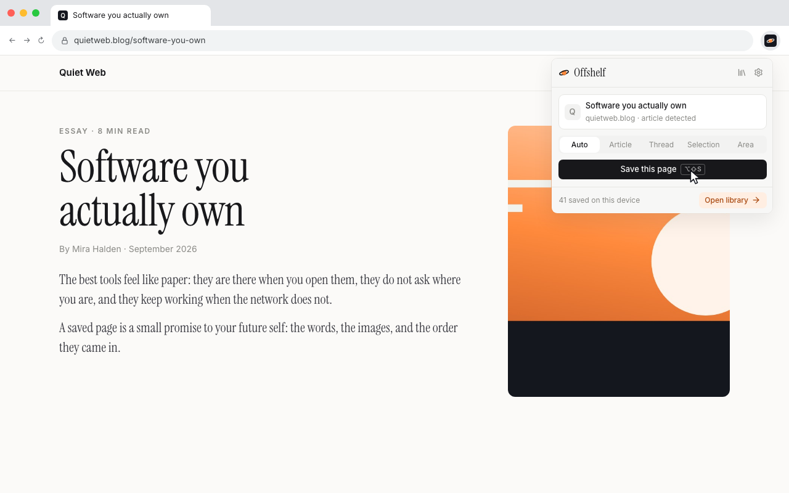
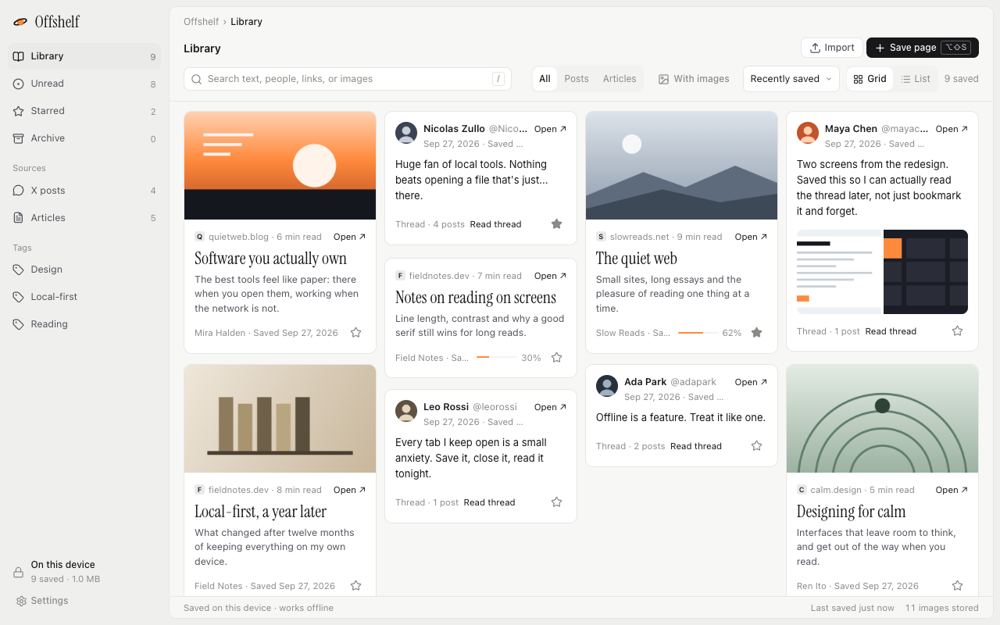
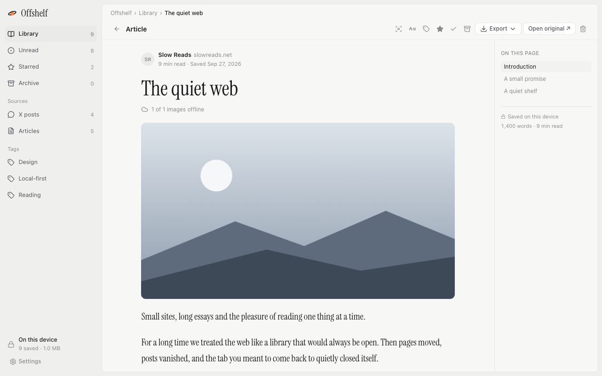
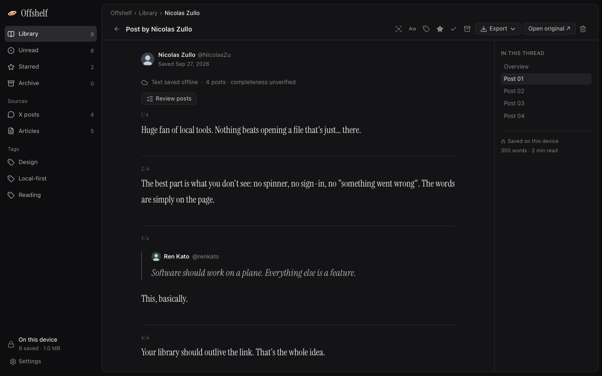

One click.
Click the toolbar icon or press Alt+Shift+S. Offshelf keeps the words, the images and the thread, in order. Other people's replies stay out.

A calm library.
Everything you saved in one grid, with search, tags, stars and an archive. See what's unread and how far you got.

A reader that gets out of the way.
Serif or sans, your text size, light or dark. Export to HTML, Markdown or PDF whenever you want.

Threads, kept whole.
X threads read as one piece, with avatars and quoted posts, saved on your device.
